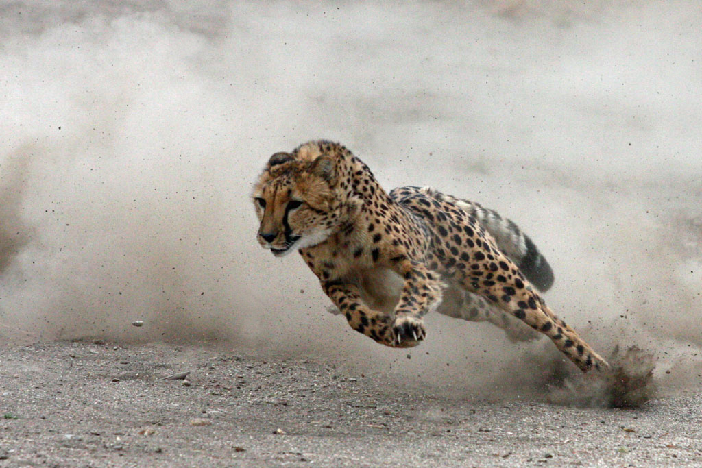

Cheetah
This is the fastest land animal and can achieve a speed of 111 km/h in just 3 seconds- That acceleration is faster than most of the top sports cars.
- Scientific Name: Acinonyx Jubatus
- Average Height: 66 – 94 centimeters
- Average Lifespan: 10 - 12 years
- Speed: 110 – 120 km/h
The cheetah is a large cat of the subfamily Felinae that occurs in Southern, North and East Africa and a few localities in Iran. The species is IUCN Red Listed as vulnerable, as it suffered a substantial decline in its historic range in the 20th century due to habitat loss, poaching, illegal pet trade, and conflict with humans. The cheetah is characterised by a slender body, deep chest, spotted coat, small rounded head, black tear-like streaks on the face, long thin legs and long spotted tail. The cheetah reaches nearly 70 to 90 cm (28 to 35 in) at the shoulder, and weighs 21–72 kg (46–159 lb).Typically yellowish tan or rufous to greyish white, the coat is uniformly covered with nearly 2,000 solid black spots. Because of its prowess at hunting, the cheetah was tamed and used to kill game at hunts in the past.